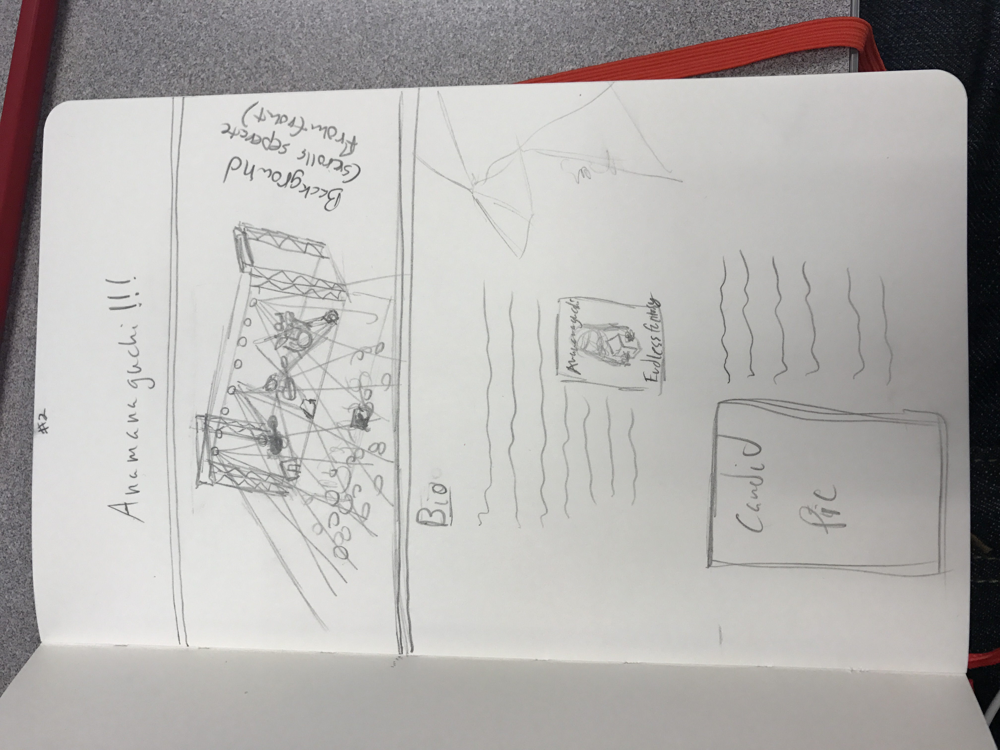

With these moodboards, I was trying to campture the bands essnce of wonder while at the same time trying to convey their lack of a serious tone, and while comming up with this image i pretty much had most of my color scheme and even the first image of the finished site in place, with only a few tweaks. However next time I will try to get more of the final fonts and things I want in place as well as more of the actual elements and inspirations involved with putting the board together.
With this wireframe I wanted to give the viewer a peek at what scrolling through the site might feel like. like before, next time I make one of these I'd like to be a little more thurough with my exectution, including a more finished look at the what I'd like the site to finally look at and maybe include more of the actual copy within the drawing itself.
Full Site LinkIn moving forward from concept to actual site I just tried to listen to the bands music while doing so and making sure that every element of what I was doing always matched the vibe of what I was hearing. Really getting into their musical 'mood' wasn't difficult at all since the band encompasses many of my interests into a cohesive sound, so I really had a blast bringing this page to life. What I found frustrating about the whole thing was translating what i was seeing in my minds eye into code, and I think that just comes from my unfamiliarity with the two languages we were using, but I very quickly started figuring out how to tweak and alter things to get them just as I liked without breaking the page, most of the time, but I found out a lot of things that I wanted to do that seemed simple were neih impossible with my current understanding of HTML and CSS. I don't know that I'd do too much differently other than just expand on the content provided in the site, going deeper into the different aspects of the band and bringing more of the content that I love to light.